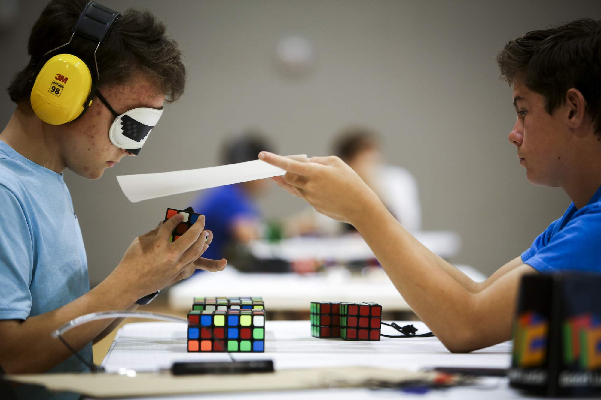

Speedsolving the Rubik's Cube 3x3 is all about solving the cube as quickly as possible. People who enjoy it learn different ways to solve the cube quickly and practice often to get faster. They use a method called CFOP, which involves solving the cube layer by layer, and they memorize different sets of moves to do it faster. To get better, they also improve their finger movements and sometimes use special cubes that turn more easily. Speedcubers compete against each other to see who can solve the cube the fastest, the video on the left is current fastest solve of 3.47s!
Another popular category is the One-Handed Cube, where competitors use only one hand to solve the 3x3 Cube. There is also a Blindfolded category, where competitors solve the cube without looking at it, using only memorization and visualization. Additionally, there are categories for solving larger cubes, such as the 4x4, 5x5, and 6x6 Cubes, which require different techniques and strategies to solve. Other categories include solving multiple cubes at once, solving a cube with one's feet, and solving cubes in unusual shapes and configurations. Each category has its own set of rules and challenges, and competitors are often required to follow strict guidelines and time limits to compete fairly.
